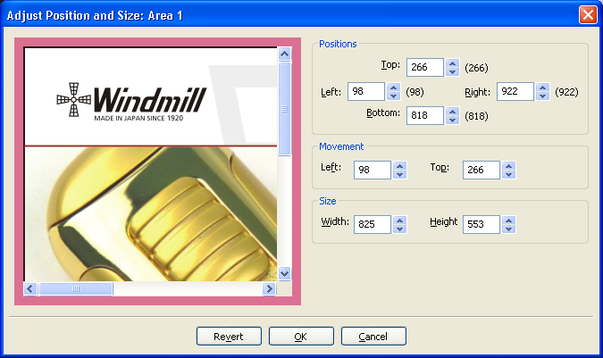

|
|
Why not Photoshop?
Photoshop is the most used tool to slice websites. Why buy some other program if it can be done on one you already own?
Here are the main differences in the slicing process, between HTMLButcher and Photoshop:
Nested tables/DIVs
Pixel-perfect area alignment
Buttons and other images that are not slices
Simple transparency setting
Nested tables/DIVs
Photoshop-generated HTML creates a single table for the entire layout. This may be fine for simple
static layouts, but is not viable for the dynamic database-driven ones.
For instance, take this layout:
This is a common product list page. Products come from a database, and to be listed on a webpage, they must
be output in the HTML source flow, that is, top-down left-right. If you generate this layout with a single table,
The product image will be on a table row, the product price will be on another one, basically the product information
will flow through multiple table rows, making its integration with dynamic data a nightmare.
HTMLButcher-generated HTML can contain unlimited nested tables (or DIVs in tableless layouts). The generated HTML will flow with the data, each
inner data can be represented with a different table, making the integration with dynamic data be immenselly easier.
This is what this "body" area source code will look like in table layout (some tag attributes where broken in lines to ease viewing):
And in AP tableless output (style was put at bottom for easier viewing):
Simple, clean, idented, ready to use HTML, in HTML flow order. This can't be done in Photoshop, so heavy HTML editting is necessary
for layouts of this type sliced in Photoshop.
Pixel-perfect area alignment
Website layouts are made for screen resolutions (72 dpi), so there are many areas where 1 or 2 pixel slices are necessary. Sometimes
it is difficult to see if the generated slice image doesn't includes pixels from other areas.
In Photoshop, slices must be drawn using a mouse, grids and zooming. Also, there is no way to tell if an area is sliced
correctly if not when seeing the generated images.
HTMLButcher provides a pixel-perfect adjustment tool, the Position and size tool:

We will be slicing this small site area, to show its power.
First draw the lines you will be using to slice, without caring too much about exact positions.
At left there is a small white area, let's cut it out to plain HTML. Selecting the Position and Size tool on it, we can begin the alignment.
I've put the zoom in 300% for easier viewing.
You can fine tune the area size, by increasing the "Positions -> Right" spin button. Increasing its value, you should begin to see when the
image border begins.
For the harder-to-see layouts, the "Repeat image" option can be valuable to aid in this alignment. Right-clicking on the preview image
and selecting "Repeat image", makes it easy to see that there is really something more than the white area.
Decreasing 1 pixel, we can be pretty sure that the area doesn't include other area's parts.
We use a similar technique for the other areas.
Buttons and other images that are not slices
Webpages are not only made of slices. Inside the page layout, there are buttons, logos, and other types of images that, while
not being part of the main slicing, must be saved so they can be used/clicked, and even repeated (for example, one "delete button"
for each product in the basket).
If you want to save these images in Photoshop, you have to slice one by one using the "select -> copy -> new -> paste -> save"
operation for EACH BUTTON, EACH LOGO, EACH IMAGE.
Not so in HTMLButcher. Using a GLOBAL AREA, you can slice images off the main layout. Areas marked as GLOBAL AREA, will not
be part of the generated HTML, its image will simply be saved on the output directory with the chosen name, ready for use in
dynamic HTML generation.
On the following image, a GLOBAL AREA (drawn in YELLOW) is created independently of the main AREAS (in green).
This GLOBAL AREA will generate an image on the page images folder, using the GIF format, named bt_buy.gif.
Simple transparency setting
Every tried to do transparency in Photoshop? How about a single slice transparency?
Designers love to do round buttons, round table borders, things that make webpages seems less boring and more livelly.
Let's use this image as an example:
Behind the red COMPRAR (BUY in portuguese) button, there is an image, it is not a solid color. Depending on the data, it could be on
some other position, so cutting the background together would not be a good option.
How to do this in Photoshop? Honestly, I really don't know. But I am pretty sure it is very, very, VERY hard to do right.
I can't imagine the work it would be to do it correctly in Photoshop. Imagine doing it for each and every site button. Now
imagine the customer wants to make some small change to the layout. You have to do it again from the start.
For HTMLButcher, it is extremelly simple. But don't take my word for it, let's see how it is done.
We will create a GLOBAL AREA around the button, and select it's area's "Image format properties" dialog.
The "Image format properties" dialog can be used for many things, like comparing file formats visually and size-wise, and setting image
transparency. To set some color as transparent, just double click on a pixel in the top image. The pixel will be added to
the "Transparent Colors" list.
As the background color is not solid, we need to set more colors as transparent. Just keep double-clicking pixels until you are satisfied
with the result.
For the case where some border color is used in the middle of the button, use the "Transparent Pixel" option, only the clicked
pixels will be set as transparent.
Doing this, the output image file will have transparency on pixels that matches the selection (if the target image format supports transparency,
of course).
Conclusion?
There are still lots more features that makes HTMLButcher a much more powertful tool for slicing websites than Photoshop, like alternate images,
in place preview, image map generation, stretcheable design support, grid slicing, to name a few.
|
|
|